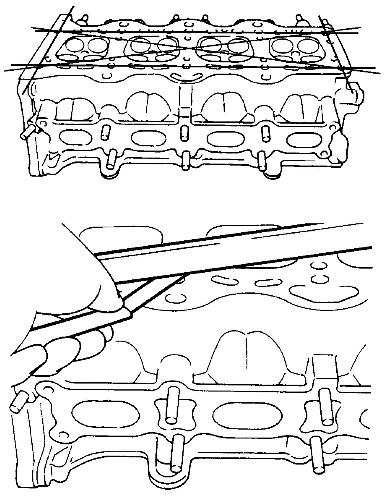

1D
| Cylinder Head Inspection |
•Remove all carbon deposits from combustion chambers.

 •Check cylinder head for crack on intake and exhaust ports, combustion chambers and head surface. Using a straightedge and feeler gauge, check flatness of gasket surface at a total of 6 positions. If distortion exceeds limit, replace cylinder head.
•Check cylinder head for crack on intake and exhaust ports, combustion chambers and head surface. Using a straightedge and feeler gauge, check flatness of gasket surface at a total of 6 positions. If distortion exceeds limit, replace cylinder head.
NOTE:
Do not use any sharp-edged tool to scrape off carbon deposits. Be careful not to scuff or nick metal surfaces when removing carbon deposits. The same applies to valves and valve seats, too.
 "Expand image")
Distortion of cylinder head surface on piston side
Limit: 0.1 mm (0.004 in.)

 "Expand image")
Cylinder Head and Related Parts Specification (for Reference)
Cylinder head height
“a”: 106.95 – 107.05 mm (4.2107 – 4.2145 in.)
 "Expand image")